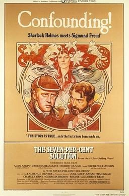

The Seven Per Cent Solution
Starring: Nicol Williamson, Robert Duvall, Alan Arkin
Director: Herbert Ross
Writer: Nicholas Meyer
Producer: Herbert Ross
The Seven-Per-Cent Solution is a 1976 mystery film directed by Herbert Ross and written by Nicholas Meyer. Based on Meyer's 1974 novel of the same name, it stars Alan Arkin, Vanessa Redgrave, Robert Duvall, and Nicol Williamson. In the film, Sherlock Holmes is apparently a delusional cocaine addict. He harasses the renowned mathematician Professor James Moriarty for no apparent reason.
Trivia
- Selected for the National Board of Review: Top Ten Films.
- Also nominated for: Academy Award for Best Writing, Adapted Screenplay; Academy Award for Best Costume Design.
- Based on The Seven-Per-Cent Solution (novel by Nicholas Meyer).
- Bernard Herrmann had been hired to write the score but died from a heart attack soon after.
- Stephen Sondheim wrote a song for the movie ("The Madame's Song") that was later recorded as "I Never Do Anything Twice" on the Side By Side By Sondheim cast recording.
- Meyer appeared in an 18-minute interview for the Blu-ray release by Shout Factory.
Filming Locations
- Austria
- Vienna
- London
- Pinewood Studios
- The film was made at Pinewood Studios with location shooting in the UK and Austria (including the Austrian National Library); the tennis match/duel between Freud and von Leinsdorf was filmed on one of the historic real tennis courts at the Queen's Club in West Kensington, London.
Previous Showings
1 Run • 1 Festival
All runs on record (1):
- November 12 - 13, 2016Vienna and the Moviesw/ Freud